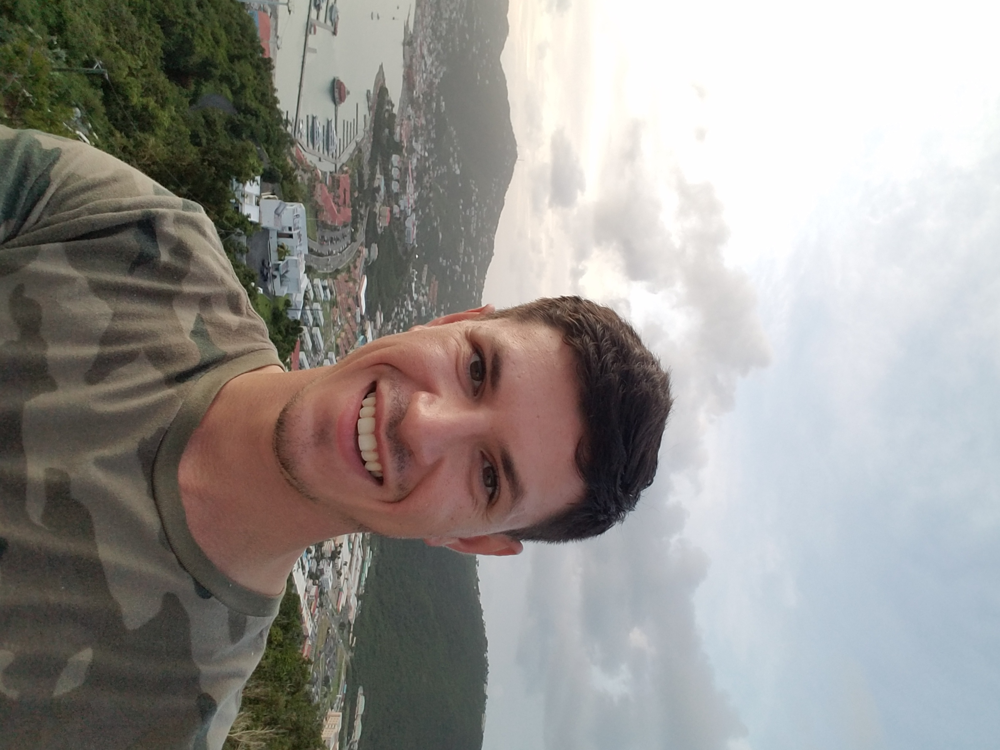

<
summary qa resume

Serhii Bondarenko
Trainee/Junior QA Engineer
Contact
serhiibss@gmail.com
linkedin
Odessa, Ukraine
+380639484783
Profile
I am a beginner QA engineer. Good at working in a team.
I like new challenges, that make me want to learn more and more about
testing and QA and improve my skills every day.
Education
- Hillel IT school Odessa 2022
- Odessa National Academy 2017-2020 Bachelor Degree at “Food Industry Technologies and Engineering”
Skills
- Jira
- API testing
- Scrum methodology
- Software Development Life Cycle
- Postman (beginner level)
- Charles(beginner level)
- HTML
- CSS
Testing skills
- Create test cases
- Create bug list in JIRA
- Test mobile apps in android studio
Personal Skills
- Good communication skills
- Quick learner
- Team player
- Sociable
- Full of ambitions
Volunteering
Made body armor for the needs of the Ukrainian army
Languages
- Ukrainian
- English (intermediate)